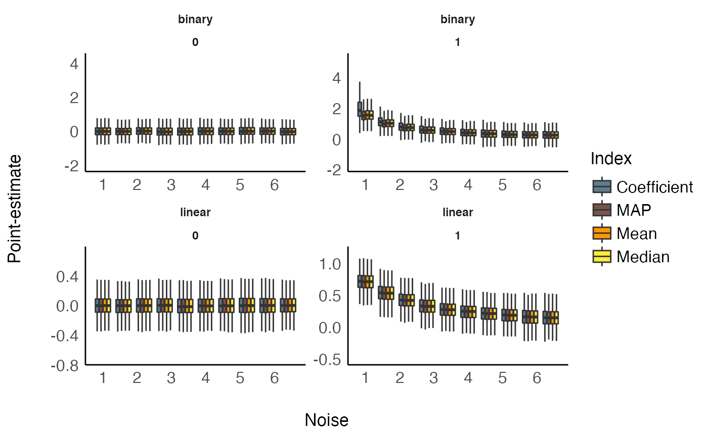
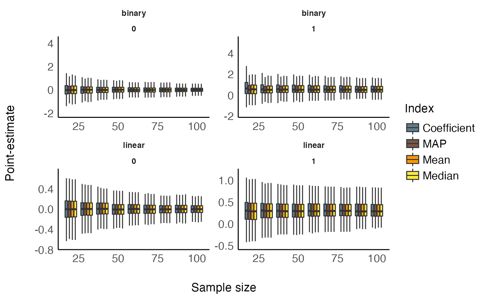
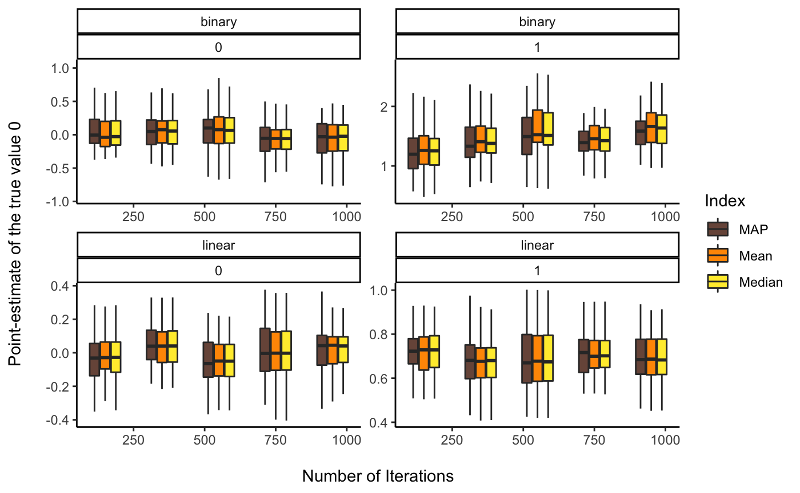
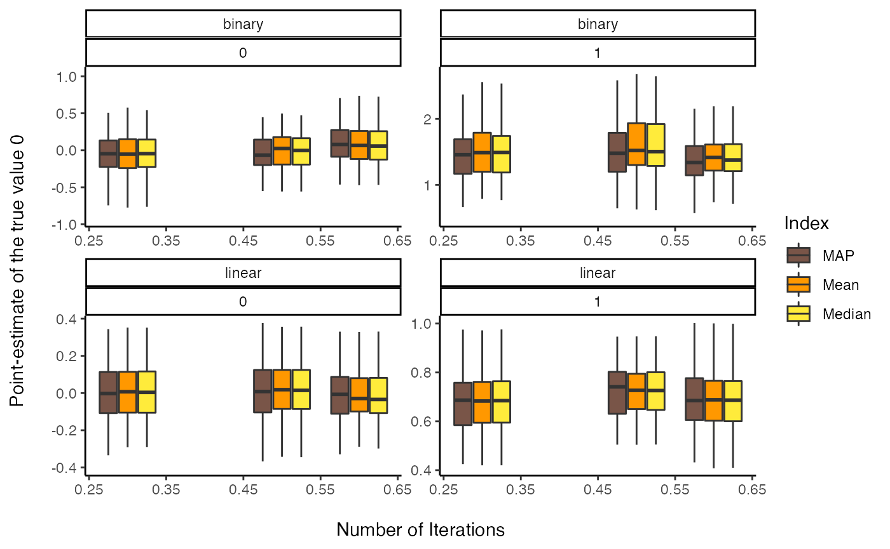

vignettes/indicesEstimationComparison.Rmd
indicesEstimationComparison.RmdThis vignette can be referred to by citing the package:
One of the main difference between the Bayesian and the frequentist frameworks is that the former returns a probability distribution of each effect (i.e., parameter of interest of a model, such as a regression slope) instead of a single value. However, there is still a need and demand, for reporting or use in further analysis, for a single value (point-estimate) that best characterise the underlying posterior distribution.
There are three main indices used in the literature for effect estimation: the mean, the median or the MAP (Maximum A Posteriori) estimate (roughly corresponding to the mode (the “peak”) of the distribution). Unfortunately, there is no consensus about which one to use, as no systematic comparison has ever been done.
In the present work, we will compare these three point-estimates of effect between themselves, as well as with the widely known beta, extracted from a comparable frequentist model. With this comparison, we expect to draw bridges and relationships between the two frameworks, helping and easing the transition for the public.
The simulation aimed at modulating the following characteristics:
We generated a dataset for each combination of these characteristics, resulting in a total of 2 * 2 * 9 * 1000 = 36000 Bayesian and frequentist models. The code used for generation is avaible here (please note that it takes usually several days/weeks to complete).
df %>%
select(error, true_effect, outcome_type, Coefficient, Median, Mean, MAP) %>%
gather(estimate, value, -error, -true_effect, -outcome_type) %>%
mutate(temp = as.factor(cut(error, 10, labels = FALSE))) %>%
group_by(temp) %>%
mutate(error_group = round(mean(error), 1)) %>%
ungroup() %>%
filter(value < 6) %>%
ggplot(aes(x = error_group, y = value, fill = estimate, group = interaction(estimate, error_group))) +
# geom_hline(yintercept = 0) +
# geom_point(alpha=0.05, size=2, stroke = 0, shape=16) +
# geom_smooth(method="loess") +
geom_boxplot(outlier.shape=NA) +
theme_modern() +
scale_fill_manual(values = c("Coefficient" = "#607D8B", "MAP" = "#795548", "Mean" = "#FF9800", "Median" = "#FFEB3B"),
name = "Index") +
ylab("Point-estimate") +
xlab("Noise") +
facet_wrap(~ outcome_type * true_effect, scales="free") 
df %>%
select(sample_size, true_effect, outcome_type, Coefficient, Median, Mean, MAP) %>%
gather(estimate, value, -sample_size, -true_effect, -outcome_type) %>%
mutate(temp = as.factor(cut(sample_size, 10, labels = FALSE))) %>%
group_by(temp) %>%
mutate(size_group = round(mean(sample_size))) %>%
ungroup() %>%
filter(value < 6) %>%
ggplot(aes(x = size_group, y = value, fill = estimate, group = interaction(estimate, size_group))) +
# geom_hline(yintercept = 0) +
# geom_point(alpha=0.05, size=2, stroke = 0, shape=16) +
# geom_smooth(method="loess") +
geom_boxplot(outlier.shape=NA) +
theme_modern() +
scale_fill_manual(values = c("Coefficient" = "#607D8B", "MAP" = "#795548", "Mean" = "#FF9800", "Median" = "#FFEB3B"),
name = "Index") +
ylab("Point-estimate") +
xlab("Sample size") +
facet_wrap(~ outcome_type * true_effect, scales="free")
We fitted a (frequentist) multiple linear regression to statistically test the the predict the presence or absence of effect with the estimates as well as their interaction with noise and sample size.
df %>%
select(sample_size, error, true_effect, outcome_type, Coefficient, Median, Mean, MAP) %>%
tidyr::pivot_longer(c(-sample_size, -error, -true_effect, -outcome_type), names_to="estimate") %>%
glm(true_effect ~ outcome_type / estimate / value, data=., family="binomial") %>%
parameters::parameters(df_method="wald") %>%
select(Parameter, Coefficient, p) %>%
filter(stringr::str_detect(Parameter, 'outcome_type'),
stringr::str_detect(Parameter, ':value')) %>%
arrange(desc(Coefficient)) %>%
knitr::kable(digits=2) | Parameter | Coefficient | p |
|---|---|---|
| outcome_typelinear:estimateMean:value | 10.85 | 0 |
| outcome_typelinear:estimateMedian:value | 10.84 | 0 |
| outcome_typelinear:estimateMAP:value | 10.72 | 0 |
| outcome_typelinear:estimateCoefficient:value | 10.54 | 0 |
| outcome_typebinary:estimateMAP:value | 4.39 | 0 |
| outcome_typebinary:estimateMedian:value | 4.28 | 0 |
| outcome_typebinary:estimateMean:value | 4.21 | 0 |
| outcome_typebinary:estimateCoefficient:value | 3.87 | 0 |
This suggests that, in order to delineate between the presence and the absence of an effect, compared to the frequentist’s beta:
Overall, the median seems to be appears as a safe and approriate choice, maintaining a a high performance accross different types of models.
The simulation aimed at modulating the following characteristics:
We generated 3 datasets for each combination of these characteristics, resulting in a total of 2 * 2 * 8 * 40 * 9 * 3 = 34560 Bayesian and frequentist models. The code used for generation is avaible here (please note that it takes usually several days/weeks to complete).
df <- read.csv("https://raw.github.com/easystats/circus/master/data/bayesSim_study2.csv")
df %>%
select(iterations, true_effect, outcome_type, beta, Median, Mean, MAP) %>%
gather(estimate, value, -iterations, -true_effect, -outcome_type) %>%
mutate(temp = as.factor(cut(iterations, 5, labels = FALSE))) %>%
group_by(temp) %>%
mutate(iterations_group = round(mean(iterations), 1)) %>%
ungroup() %>%
filter(value < 6) %>%
ggplot(aes(x = iterations_group, y = value, fill = estimate, group = interaction(estimate, iterations_group))) +
geom_boxplot(outlier.shape=NA) +
theme_classic() +
scale_fill_manual(values = c("beta" = "#607D8B", "MAP" = "#795548", "Mean" = "#FF9800", "Median" = "#FFEB3B"),
name = "Index") +
ylab("Point-estimate of the true value 0\n") +
xlab("\nNumber of Iterations") +
facet_wrap(~ outcome_type * true_effect, scales="free") 
df %>%
mutate(warmup = warmup / iterations) %>%
select(warmup, true_effect, outcome_type, beta, Median, Mean, MAP) %>%
gather(estimate, value, -warmup, -true_effect, -outcome_type) %>%
mutate(temp = as.factor(cut(warmup, 3, labels = FALSE))) %>%
group_by(temp) %>%
mutate(warmup_group = round(mean(warmup), 1)) %>%
ungroup() %>%
filter(value < 6) %>%
ggplot(aes(x = warmup_group, y = value, fill = estimate, group = interaction(estimate, warmup_group))) +
geom_boxplot(outlier.shape=NA) +
theme_classic() +
scale_fill_manual(values = c("beta" = "#607D8B", "MAP" = "#795548", "Mean" = "#FF9800", "Median" = "#FFEB3B"),
name = "Index") +
ylab("Point-estimate of the true value 0\n") +
xlab("\nNumber of Iterations") +
facet_wrap(~ outcome_type * true_effect, scales="free") 
Conclusions can be found in the guidelines section.